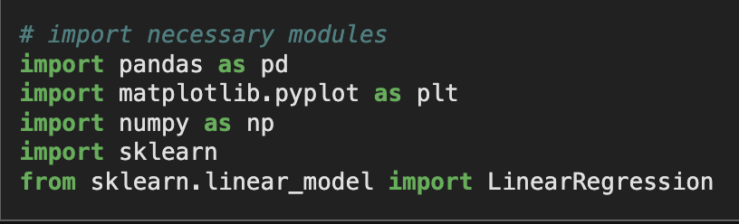

Data Processing with Python Intro
Previously, I learned how to process data with Python for my Toronto Science Fair project. This is a short introduction to it; specifically, performing simple linear regression on two variable data and plotting it on a graph!
Required Software
- A Python IDE (Jupyter Notebook Preferred)
- Pandas Python module
- Scikit-learn Python module
- Numpy Python module
- Matplotlib Python module
Step One: Import modules
This is just like importing modules in Java. Use the following import statements at the start of your code:
